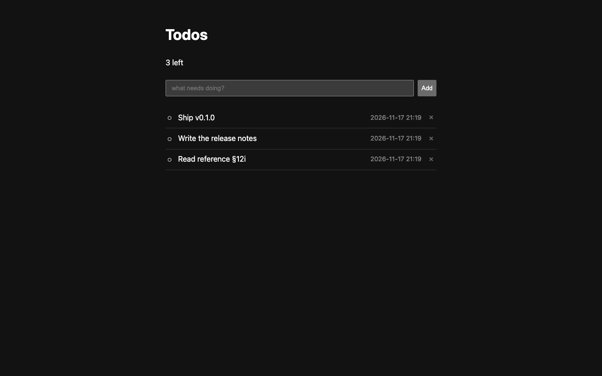

Todo
A list that works with no JavaScript at all, then enhances itself.

examples/todo — screenshot taken from webc dev.webc.json
{
"name": "todo",
"port": 8080,
"migrations": "migrations",
"server": ["src/server.c"],
"shared": ["src/view.c"]
}src/server.c
// The server half: routes and data. It renders the page the shared view describes
// and answers the JSON the browser half (if any) would use.
//
// webc dev the default database, the dev reload server
// DATABASE_URL=sqlite:data/todo.db ./todo
#include <webc/server.h>
#include "todo.h"
// The page, seeded from the table.
GET("/") { return page(Todos, db_all(Todo)); }
// The list and one create, for a client that speaks JSON. `json(200, v)` knows the
// element type because the collection carries its descriptor.
GET("/api/todos") { return json_list(200, db_all(Todo)); }
POST("/api/todos") {
Todo t = body(Todo); // form or JSON, validated by the model
t.created_at = now();
db_save(Todo, &t); // insert or update; a driver error is a response
// a form post gets its redirect back to the page, a JSON call gets the row it made
if (wc_body_is_form()) return redirect("/");
return json(201, Todo, &t);
}
PATCH("/api/todos/:id") {
Todo *t = db_get(Todo, path_i64("id"));
if (!t) fail(404, "no such todo");
t->done = !t->done;
db_save(Todo, t);
return json(200, Todo, t);
}
DELETE("/api/todos/:id") {
db_delete(Todo, path_i64("id"));
return res_empty(204);
}
// The no-JavaScript half of the UI: an HTML form cannot PATCH, so each row posts
// here, flips the row and redirects back. One line, because the form carries only
// an id and `db_get` answers null for a stale one.
POST("/todos/toggle") {
Todo *t = db_get(Todo, body(RowId).id);
if (t) {
t->done = !t->done;
db_save(Todo, t);
}
return redirect("/");
}
POST("/todos/delete") {
db_delete(Todo, body(RowId).id);
return redirect("/");
}
// Server-sent events, still a stub in an example that has no live updates yet.
GET("/api/events") { return res_sse(nullptr, nullptr); }src/todo.h
// The todo app's model — the one file both halves include.
//
// A `Text` field is a `const char *` the framework owns for the life of whatever
// scope produced it (the request, the render, the app). No arena, no length, no
// cast: `text("%s", t->title)`.
#pragma once
#include <webc/shared.h>
WEBC_MODEL(Todo, (id, i64, .pk = true),
(title, Text, .required = true, .max = 200),
(done, bool),
(created_at, Text))
// VecTodo, carrying its own element type: `for_each(t, todos)` takes its key from
// the model's `.pk` and `json(200, todos)` needs no type name.
Vec(Todo)
// The page, declared where the server and (if it had one) the client can both see it.
declare_view(Todos);src/view.c
// The page. Markup only: no handlers, no state, no database.
//
// It renders on the server and (unchanged) in a browser, and every interaction in
// it is a plain form post, so the whole app works with JavaScript switched off.
#include "todo.h"
// 2026-10-28T12:50:36.083Z → "2026-10-28 12:50". The stored timestamp is RFC3339;
// nobody wants ten characters of milliseconds in a list.
static Text short_time(Text ts) {
if (!ts || strlen(ts) < 16) return "";
return fmt("%.10s %.5s", ts, ts + 11);
}
static i64 left(const VecTodo *v) {
i64 n = 0;
for_each(t, (*v))
if (!t->done) n++;
return n;
}
view(Todos, VecTodo *todos) {
el("main") {
el("h1") { text("Todos"); }
el("p") { class_("count"); text("%lld left", left(todos)); }
el("form") { post_to("/api/todos");
el("input") { name("title"); placeholder("what needs doing?"); required(); }
el("button") { text("Add"); }
}
el("ul") { class_("todos");
for_each(t, (*todos)) {
el("li") { class_(t->done ? "done" : "");
el("form") { post_to("/todos/toggle"); hidden_i("id", t->id);
el("button") { class_("tick"); text(t->done ? "✓" : "○"); }
}
el("span") { class_("title"); text(t->title); }
el("span") { class_("when"); text(short_time(t->created_at)); }
el("form") { post_to("/todos/delete"); hidden_i("id", t->id);
el("button") { class_("x"); text("×"); }
}
}
}
}
el("p") { class_("empty"); show(len(*todos) == 0); text("Nothing left. Enjoy it."); }
}
}migrations/0001_todos.sql
create table if not exists todos (
id integer primary key autoincrement,
title text not null,
done integer not null default 0,
created_at text not null default current_timestamp
);public/index.html
<!doctype html>
<html lang="en">
<head>
<meta charset="utf-8" />
<meta name="viewport" content="width=device-width, initial-scale=1" />
<title>WebC · todos</title>
<link rel="stylesheet" href="/public/style.css" />
</head>
<body>
<!-- res_page() drops the server-rendered component in here -->
<div id="root"></div>
</body>
</html>…and 2 more files in examples/todo.